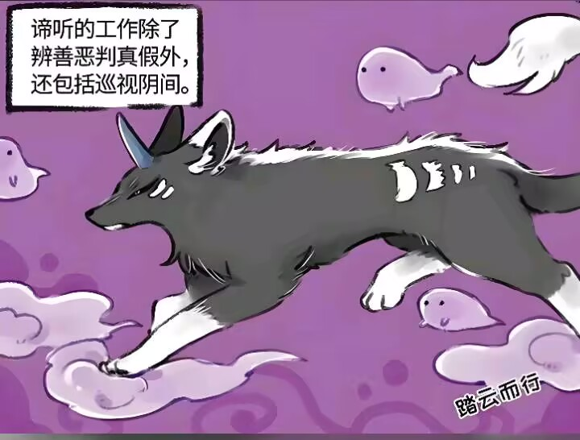
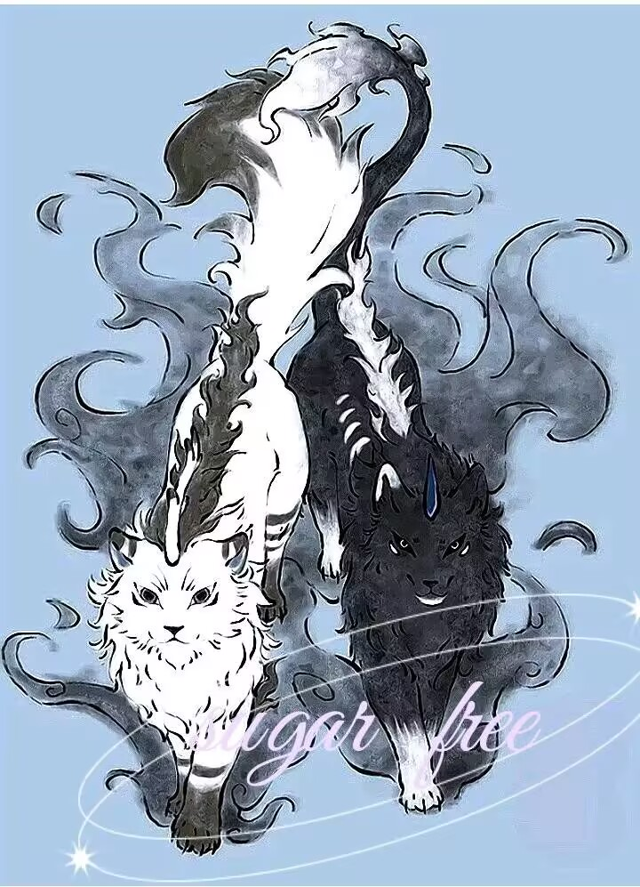
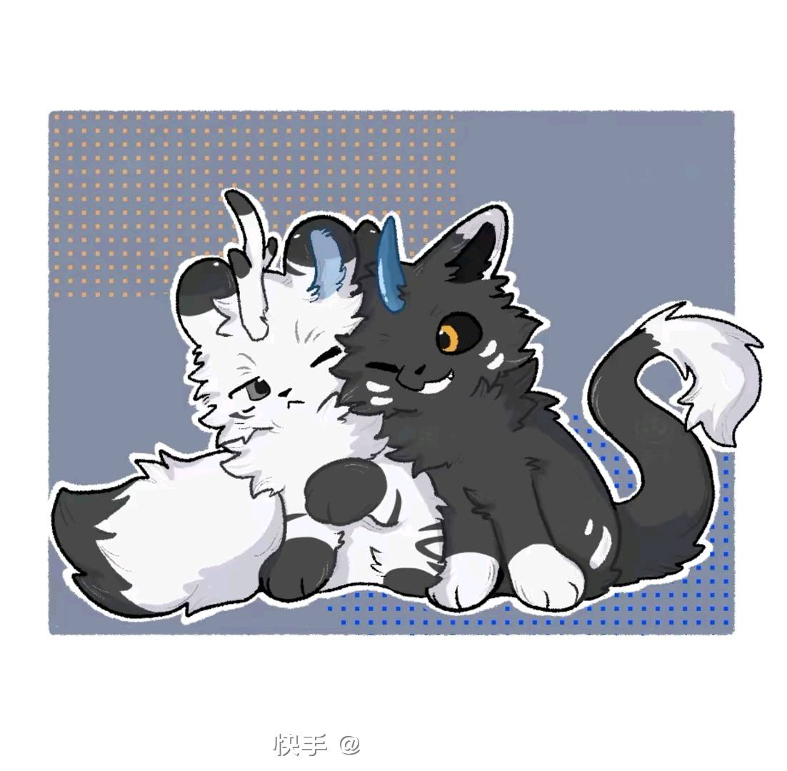

地藏菩萨的坐骑，地府的高管
谛听是地藏菩萨经案下伏的一只神兽。原先是一只普通的白犬， 在地府生活久了，毛色也慢慢变得漆黑。
我不会把每件事都交给别人。善恶、真假、人心里藏着的内容， 都需要认真分辨。我后来被提拔为地府高管，负责的事情也变得更多。
HELL EXECUTIVE · TRUSTED BY EARTH
能辨善恶，能察真假，能听人心
我是地府高管，也是地藏菩萨的坐骑。 工作是辨善恶、判真假、巡视阴间，闲下来也会和大地聊天。 我原来只是一只普通的白犬，后来因为主人地藏菩萨在地府，便一直留在这里。
谛听是地藏菩萨经案下伏的一只神兽。原先是一只普通的白犬， 在地府生活久了，毛色也慢慢变得漆黑。
我不会把每件事都交给别人。善恶、真假、人心里藏着的内容， 都需要认真分辨。我后来被提拔为地府高管，负责的事情也变得更多。
谛听的工作主要包括辨善恶、判真假和巡视阴间。 地府里有各种阿飘需要管理，清明等繁忙时节还会有大量快递和纸钱事务， 所以工作认真到几乎不肯休息。
长期过度思虑让我患上脱毛的怪病。地藏菩萨批了长假， 我才来到人间休养；凡人心事太多，让能听人心的我同样被吵得失眠， 后来在鹿人店得到白泽枕，生活才稍稍安静一些。

鹿人店和地府都有我会来的理由。收了四不像的求助电话， 我会赶去收阿飘；休养脱毛时，我又会从鹿人店买到白泽枕， 顺便探望白泽。这里和地府的繁忙不同，却成了我偶尔歇脚的地方。
认真分辨善恶，不轻易交给别人的判断。
辨认真假美猴王一事后，成为地府高管。
管理阿飘，也会应对地府和阴间的日常事务。
有一天，我在奈何桥下发现了一堆猫骨头。 我把骨头埋进院子，第二天便种出了一只骷髅猫， 取名小髅。从那以后，我收养了她，把她当作自己的女儿。
小髅厌恶人类，我尊重她的想法，也会尽到保护女儿的责任。 她的生前灵魂和皮毛被留在了一只厉鬼——芝麻那里； 当芝麻放下执念重新投胎，我也会为小髅祝福他。
我十分尊敬白泽先生。人间休养的时候，我通过鹿人店得到了白泽枕， 也顺便去探望白泽。
我偶尔会用窥天镜留意白泽，也会挖通往他家的地道送东西。 白泽先生是我心里重要的榜样；就算我偶尔做事太热心， 最终也会在自己的职责和家人身上，认真把该做的做好。

